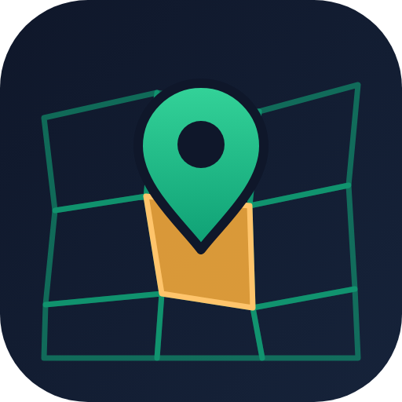
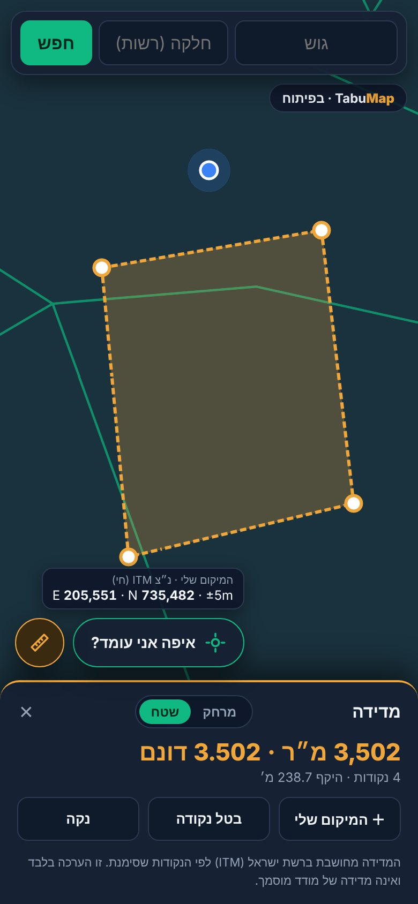

TabuMapעל איזו חלקה אתם עומדים?
איתור גוש וחלקה לפי מיקום GPS או לפי חיפוש, עם גבולות המגרשים, שטח רשום ושטח מחושב על גבי מפה. בהמשך: תוכניות בנייה ומפענח נסחי טאבו בשפה פשוטה.



לחיצה אחת מוצאת את הגוש והחלקה לפי ה-GPS. כשאתם קרובים לגבול, האפליקציה מציגה גם את החלקות הסמוכות.
מקלידים גוש, או גוש וחלקה, ומגיעים ישר לחלקה על המפה. חלקה שבוטלה או אוחדה מסומנת ככזו.
שטח רשום מול שטח מחושב מהמפה, דונמים, סטטוס הסדר ותאריך עדכון, עם קישורים להפקת נסח טאבו, ל-GovMap ולתוכניות.
גבולות החלקות על מפת רחובות או על תצלום לוויין, ושיתוף חלקה בקישור.
כפתור בכרטיס החלקה פותח את Google Street View בדיוק בנקודה שבחרתם, כדי לראות את המגרש מהרחוב.
המיקום שלכם בזמן אמת ונ״צ מרכז החלקה ב-ITM (E/N במטרים), עם העתקה בלחיצה.
מסמנים נקודות על המפה או לפי ה-GPS ומקבלים מרחק, שטח בדונם והיקף.
התוכניות שחלות על כל חלקה, עם הסבר קצר על הייעוד.
משתפים את ה-PDF של הנסח ומקבלים סיכום ברור: בעלים, משכנתאות, הערות אזהרה ועיקולים.
ללא הרשמה, ללא פרסומות וללא איסוף מידע אישי. המיקום משמש רק במכשיר. גבולות החלקות מגיעים משכבת החלקות הפתוחה של המרכז למיפוי ישראל (data.gov.il). TabuMap היא יוזמה פרטית של RabieMan Labs, אינה שירות ממשלתי, אינה מקור מוסמך לגבולות ואינה מחליפה נסח טאבו או מדידה של מודד מוסמך.
Which parcel are you standing on?
Find the land block (gush) and parcel (helka) by GPS or by search, with parcel boundaries, registered area and measured area on a map. Coming next: zoning plans and a plain-language Tabu extract analyzer.
One tap finds the block and parcel from your GPS position. Near a boundary, nearby parcels are shown too.
Type a block, or a block and parcel, and jump straight to it on the map. Cancelled or merged parcels are flagged.
Registered vs. measured area, dunams, settlement status and update date, with links to the land registry extract, GovMap and zoning plans.
Parcel boundaries over a street map or satellite imagery, and share a parcel by link.
A button on the parcel card opens Google Street View right at the point you picked, to see the lot from the street.
Your live position and the parcel centre in ITM (E/N metres), copied with one tap.
Mark points on the map or by GPS to get distance, area in dunams and perimeter.
The plans that apply to each parcel, with a short explanation.
Share the extract PDF and get a clear summary: owners, mortgages, caveats and liens.
No sign-up, no ads, no personal data collected. Your location is used on the device only. Parcel boundaries come from the Survey of Israel's open parcel layer (data.gov.il). TabuMap is a private initiative by RabieMan Labs, not a government service, not an authoritative source for boundaries, and no substitute for a land registry extract or a licensed surveyor.